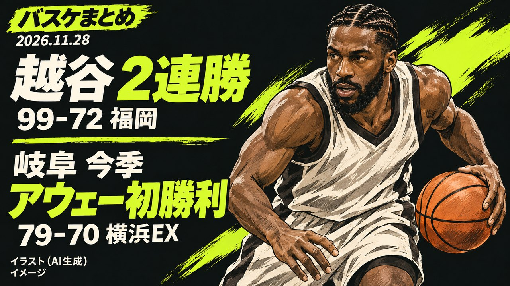

越谷アルファーズが福岡に99-72で2連勝、岐阜は横浜EXに79-70で今季アウェー初勝利

11月28日のB.LEAGUE ONE第2戦で、越谷アルファーズが福岡に99対72で勝ちました。岐阜スゥープスは横浜エクセレンスに79対70で勝っています。
この記事では、同日朝の予測と結果を照らし合わせます。
越谷の勝利は的中しました。横浜EXの勝利を予測した試合は外れました。
19時に更新：試合が終わったため、予測の記事から結果の検証に書き換えました。
【事実】越谷が福岡に99-72、2連勝
福岡対越谷の第2戦は、越谷が99対72で勝ちました。第1戦の97対81に続く2連勝です。
越谷はクレモンズ選手が21得点、8アシストでした。フィーラー選手が20得点、8アシストで続きました。
福岡はアルティノ選手が18得点、11リバウンドでした。出場時間は29分2秒です。
福岡のアダムス選手は、21分32秒に出て11得点でした。11月26日にリストから外れた後の復帰戦です。
【事実】岐阜が横浜EXに79-70、アウェー10戦目で初勝利
横浜EX対岐阜の第2戦は、岐阜が79対70で勝ちました。岐阜は第1戦の68対94から立て直しました。
岐阜はプレストン選手が33得点でした。出場は35分38秒です。
髙木涼選手が17得点、ワイドマン選手が12リバウンドで続きました。
横浜EXはボイド選手が29得点でした。3ポイントは21本中3本です。
【検証】予測は1勝1敗、外れた理由は3ポイント
同日朝の予測は、福岡対越谷が越谷の勝ちでした。横浜EX対岐阜は、横浜EXの勝ちでした。
越谷の試合は的中しました。横浜EXの試合は外れました。
越谷は失点の少なさを根拠にしていました。この試合の72失点は、前日の81失点より9点少なくなりました。
外れた試合は、岐阜がアウェー未勝利だったことを根拠にしていました。この見立ては、結果で崩れました。
【分析】数字で見る勝敗の分かれ目
越谷は3ポイントを29本中15本決めました。ターンオーバーは2回です。
福岡のターンオーバーは12回でした。越谷は27アシストで、福岡の17を上回りました。
横浜EXは3ポイントが38本中5本でした。成功率は約13パーセントです。
フリースローは31本中21本で、岐阜の18本中11本より本数が多くなりました。それでも、外の不振を補えませんでした。
岐阜は2ポイントが46本中28本でした。横浜EXの34本中17本を、中の得点で上回っています。
横浜EXは前日に94点を取った攻撃が、2日連続では続きませんでした。ターンオーバーは岐阜の16回に対して13回で、差は大きくありません。
【事実】インジュアリーリストの状況
公式リストは11月27日付です。福岡はトルバート三世選手が載っています。
越谷は四家魁人選手が載っています。岐阜はマクリー選手が載っています。
横浜EXに、現在登録中の選手はいません。